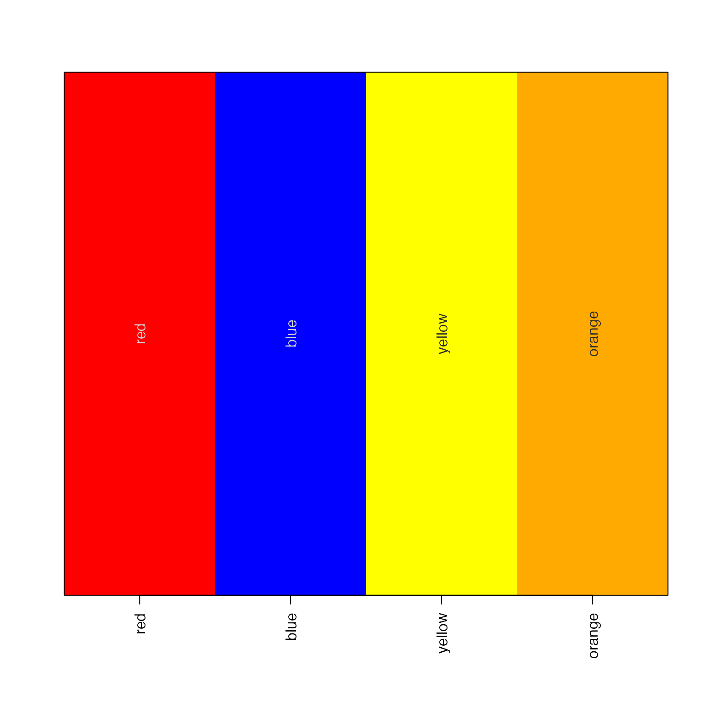

Convert an HCL color matrix to vector of R hex colors
hcl2col(
x = NULL,
H = NULL,
C = NULL,
L = NULL,
ceiling = 255,
maxColorValue = 255,
alpha = NULL,
fixup = TRUE,
model = getOption("jam.model", c("hcl", "polarLUV", "polarLAB")),
verbose = FALSE,
...
)matrix of colors, with rownames "H", "C", "L", or if not
supplied it looks for vectors H, C, and L accordingly. It can
alternatively be supplied as an object of class polarLUV.
numeric vectors supplied as an alternative to x, with
ranges 0 to 360, 0 to 100, and 0 to 100, respectively.
numeric value indicating the maximum values allowed for
R, G, and B after conversion by colorspace::as(x, "RGB").
This ceiling is applied after the maxColorValue is used to scale
numeric values, and is intended to correct for the occurrence of
values above 255, which would be outside the typical color gamut
allowed for RGB colors used in R. In general, this value should not
be modified.
numeric value indicating the maximum RGB values, typically scaling values to a range of 0 to 255, from the default returned range of 0 to 1. In general, this value should not be modified.
optional vector of alpha values. If not supplied, and if
x is supplied as a matrix with rowname "alpha", then values will
be used from x["alpha",].
boolean indicating whether to use
colorspace::hex(...,fixup=TRUE) for conversion to R hex colors,
which is not recommended since this conversion applies some
unknown non-linear transformation for colors outside the color gamut.
It is here is an option for comparison, and if specifically needed.
other arguments are ignored.
vector of R colors, or where the input was NA, then NA values are returned in the same order.
This function takes an HCL matrix,and converts to an R color using
the colorspace package colorspace::polarLUV() and colorspace::hex().
When model="hcl" this function uses farver::encode_colour()
and bypasses colorspace. In future the colorspace dependency
will likely be removed in favor of using farver. In any event,
model="hcl" is equivalent to using model="polarLUV" and
fixup=TRUE, except that it should be much faster.
Other jam color functions:
alpha2col(),
applyCLrange(),
col2alpha(),
col2hcl(),
col2hsl(),
col2hsv(),
color2gradient(),
fixYellowHue(),
fixYellow(),
getColorRamp(),
hsl2col(),
hsv2col(),
isColor(),
kable_coloring(),
makeColorDarker(),
make_html_styles(),
make_styles(),
rgb2col(),
setCLranges(),
setTextContrastColor(),
showColors(),
unalpha(),
warpRamp()
# Prepare a basic HCL matrix
hclM <- col2hcl(c(red="red",
blue="blue",
yellow="yellow",
orange="#FFAA0066"));
hclM;
#> red blue yellow orange
#> H 12.17399 265.87273 85.87275 46.97627
#> C 179.04136 130.68125 107.06428 103.63940
#> L 53.24079 32.29701 97.13927 76.07836
#> alpha 1.00000 1.00000 1.00000 0.40000
# Now convert back to R hex colors
colorV <- hcl2col(hclM);
colorV;
#> red blue yellow orange
#> "#FF0000" "#0000FF" "#FFFF00" "#FFAA00"
showColors(colorV);
